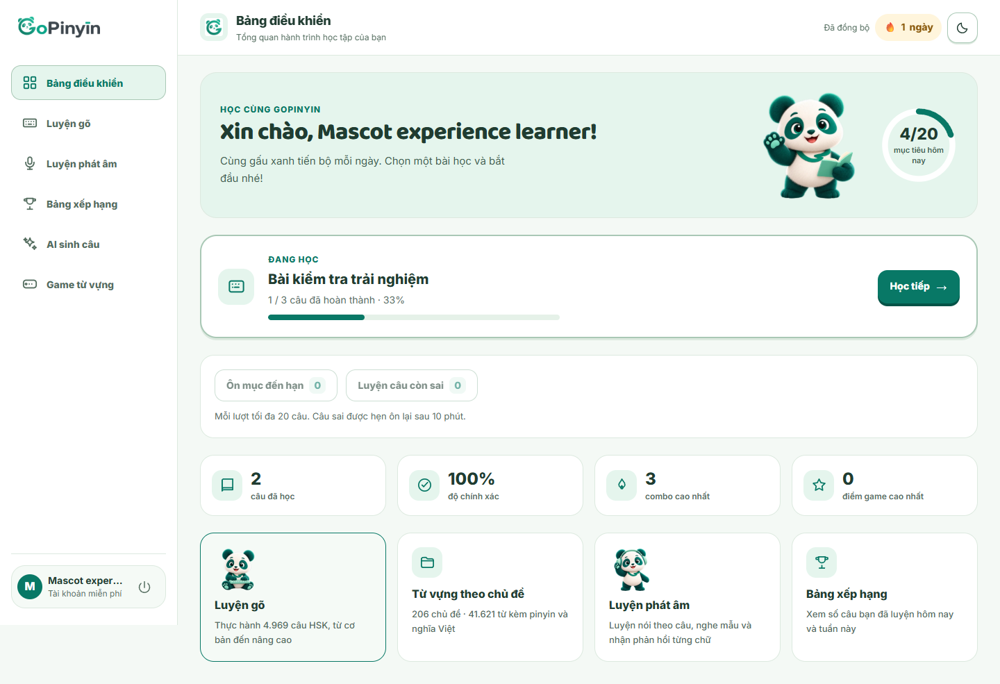

<!doctype html>
<html lang="vi"><head><meta charset="utf-8"><meta name="viewport" content="width=device-width,initial-scale=1"><title>GoPinyin — Chọn hướng thiết kế mới</title><link href="https://fonts.googleapis.com/css2?family=Be+Vietnam+Pro:wght@400;500;600;700;800&family=Manrope:wght@400;500;600;700;800&display=swap" rel="stylesheet"><link rel="stylesheet" href="gallery.css"></head><body><div id="review"></div>
<script>
const plans=[
 {id:'adventure',n:'01',name:'Gấu Phiêu Lưu',tag:'Sinh động · Nhiều nhận diện · Học theo chặng',color:'#087e68',light:'#e0f1dc',intro:'Biến GoPinyin thành một thế giới học có gấu dẫn đường. Màu sáng, minh họa lớn, mục tiêu ngắn và phần thưởng rõ ràng.',add:'Thêm phiên Nghe → Gõ → Nói và huy hiệu cho gấu.',merge:'Gom Game vào thử thách sau bài; AI nằm trong bài học.',reduce:'Rút xếp hạng công khai khỏi trang đầu, thi đua là tùy chọn.',best:'Phù hợp nhất nếu muốn cuốn hút người mới và làm gấu thành thương hiệu.'},
 {id:'jade',n:'02',name:'Jade Studio',tag:'Ấm áp · Trưởng thành · Học có kế hoạch',color:'#285c48',light:'#eee3d1',intro:'Một không gian như cuốn sổ được biên tập kỹ. Nền ngà, khối xanh rừng, chữ serif và nội dung được sắp thứ tự cho mỗi ngày.',add:'Thêm Sổ tay, mục tiêu cá nhân và tóm tắt tuần.',merge:'Gom thư viện, bộ đã lưu và lịch ôn thành một luồng.',reduce:'Đưa Game/xếp hạng khỏi điều hướng chính, giảm thống kê rời rạc.',best:'Phù hợp nếu người học trưởng thành và cảm giác chuyên nghiệp là ưu tiên.'},
 {id:'neon',n:'03',name:'Neon Lab',tag:'Nổi bật · Hiện đại · Tập trung giao tiếp',color:'#aca0ed',light:'#272a41',intro:'Một phòng luyện tiếng Trung với nền tối, khối chữ lớn và tím/lime. Chuyển từ chọn bài gõ sang sử dụng câu trong tình huống.',add:'Thêm nhập vai, nghe theo cụm, shadowing và phòng thanh điệu.',merge:'Gõ trở thành bước ôn trong cùng tình huống; AI gắn với hội thoại.',reduce:'Thay vai trò Game độc lập bằng thử thách giao tiếp; bớt bảng điểm.',best:'Phù hợp nếu sẵn sàng đổi định vị sang luyện nói và phát triển thêm dịch vụ âm thanh.'}
];
const board=new URLSearchParams(location.search).get('board');
function links(p){return `<a href="index.html?plan=${p.id}">Thử tổng quan</a><a href="index.html?plan=${p.id}&screen=study">Thử màn học</a><a href="${p.id}-study.png">Ảnh học desktop</a><a href="${p.id}-mobile-dashboard.png">Ảnh tổng quan mobile</a>`;}
function summary(p){return `<div class="changes"><div><span>THÊM</span><p>${p.add}</p></div><div><span>GOM</span><p>${p.merge}</p></div><div><span>GIẢM</span><p>${p.reduce}</p></div></div>`;}
function detail(p){
const info={
adventure:{flow:'Chọn chặng / HSK → Nghe → Gõ → Nói → nhận huy hiệu → ôn hôm sau.',steps:'Làm hệ thành phần và hành trình trước; sau đó gắn các bài hiện có, điều phối phiên kết hợp rồi mới thêm nhiệm vụ và phần thưởng.',trade:'Cần dữ liệu phần thưởng và bộ điều phối phiên. Tránh trang trí lấn câu học hoặc buộc người học phải đợi hiệu ứng.'},
jade:{flow:'Chọn mục tiêu → xem kế hoạch hôm nay → ôn đến hạn → học câu mới → lưu vào sổ tay.',steps:'Làm trang Hôm nay và thư viện hợp nhất; tiếp theo là Sổ tay, hàng đợi ôn có giải thích và báo cáo tuần.',trade:'Tận dụng lịch ôn và tiến độ hiện có tốt nhất. Người mới cần kế hoạch khởi đầu rõ, không hiện số liệu cá nhân hóa giả.'},
neon:{flow:'Chọn tình huống → nghe theo cụm → nói cả câu → xem phản hồi → gõ ôn câu vừa nói.',steps:'Bắt đầu bằng tình huống biên soạn sẵn và nghe theo cụm. Thêm so sánh bản ghi; thử nghiệm AI hội thoại và chấm âm chi tiết sau khi kiểm chứng dịch vụ.',trade:'Mức thay đổi chức năng cao nhất. Sóng âm trong ảnh là minh họa; chấm thanh điệu chính xác cần dịch vụ âm thanh phù hợp, có độ trễ và chi phí.'}
}[p.id];
return '<details class="plan-detail" open><summary>Những chức năng sẽ thay đổi</summary>'+summary(p)+'<div class="detail-copy"><div><b>Luồng học mới</b><p>'+info.flow+'</p></div><div><b>Thứ tự triển khai sau khi chọn</b><p>'+info.steps+'</p></div><div><b>Điều cần cân nhắc</b><p>'+info.trade+'</p></div></div></details>';
}
function sheet(p){return `<section class="sheet ${p.id}" style="--accent:${p.color};--light:${p.light}"><header class="sheet-head"><div><span class="kicker">GOPINYIN · PHƯƠNG ÁN ${p.n}</span><h1>${p.name}</h1><p>${p.tag}</p></div><div class="sheet-note">Hai hình minh họa trong cùng phương án<br><b>Tổng quan desktop + màn học điện thoại</b><small>Prototype riêng · dữ liệu mẫu · chưa sửa web chính</small></div></header><div class="sheet-pictures"><div><h2>01 / Tổng quan hoàn toàn mới</h2></div><div><h2>02 / Cùng phong cách trong màn học</h2></div></div>${summary(p)}<footer><p>${p.best}</p><span>Ảnh chi tiết và chức năng đề xuất: localhost:8096</span></footer></section>`;}
if(board&&plans.some(p=>p.id===board)){document.body.className='board';document.getElementById('review').innerHTML=sheet(plans.find(p=>p.id===board));}
else{document.getElementById('review').innerHTML=`<header class="review-head"><span class="kicker">GOPINYIN / DESIGN DIRECTIONS</span><h1>Một thương hiệu.<br>Ba cách làm người học muốn quay lại.</h1><p>Không chỉ đổi màu. Mỗi hướng thay đổi cách trình bày, vai trò của gấu và đường đi từ “mở web” đến “học xong một phiên”.</p><div class="notice"><b>Đây là bản để duyệt.</b> Chưa thay đổi web chính. Chức năng mới và số liệu trong ảnh là minh họa.</div><nav>${plans.map(p=>`<a href="#${p.id}">${p.n} · ${p.name}</a>`).join('')}<a href="plans.md">Đọc cả 3 kế hoạch</a></nav></header><main>${plans.map(p=>`<article id="${p.id}" class="plan-block ${p.id}" style="--accent:${p.color};--light:${p.light}"><div class="plan-title"><div><span class="kicker">PHƯƠNG ÁN ${p.n}</span><h2>${p.name}</h2><p>${p.intro}</p></div><a class="board-link" href="${p.id}-board.png">Mở bảng ảnh lớn ↗</a></div><a class="cover-link" href="${p.id}-board.png"></a><div class="plan-links">${links(p)}</div>${detail(p)}<div class="image-grid"><a href="${p.id}-dashboard.png"><span>Tổng quan desktop</span></a><a href="${p.id}-study.png"><span>Màn học desktop</span></a><a href="${p.id}-mobile-dashboard.png"><span>Tổng quan điện thoại</span></a><a href="${p.id}-mobile-study.png"><span>Màn học điện thoại</span></a></div></article>`).join('')}<section class="decision"><span class="kicker">CHỌN HƯỚNG NÀO?</span><h2>Ưu tiên nhận diện gấu: chọn 01.</h2><p>Chọn 02 cho cảm giác trưởng thành và học có hệ thống. Chọn 03 nếu muốn đầu tư mạnh vào giao tiếp. Có thể mượn một mô-đun chức năng giữa các phương án; nên giữ một hệ hình ảnh chủ đạo.</p><a href="plans.md">Đọc phần thêm/gom/bỏ, các bước triển khai và giới hạn →</a></section><details class="before"><summary>Đối chiếu với giao diện GoPinyin trước lần đề xuất này</summary><p>Các ảnh mới ở trên được dựng riêng. Không có thay đổi trong src/, API hay tài khoản.</p></details></main><footer class="review-footer">GoPinyin · 3 phương án, 12 ảnh màn hình · Ảnh và tương tác dùng dữ liệu minh họa.</footer>`;}
</script></body></html>
